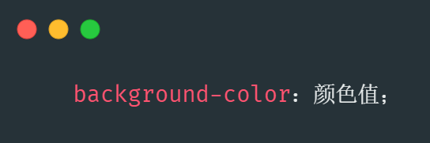
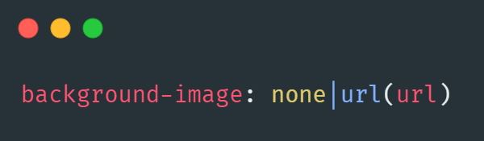
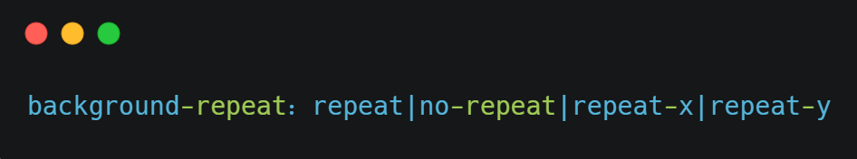
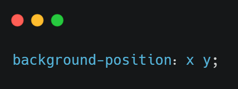

通过CSS背景属性，可以给页面元素添加背景样式
背景属性可以设置背景颜色、背景图片、背景平铺、背景图片位置、背景图像固定等...
本页面目录：
background-color 属性定义了元素的背景颜色↙
一般情况下元素背景颜色默认值是 transparent (透明)，我们也可以手动指定背景颜色为透明色
background-image 属性描述了元素的背景图像，实际开发常见于logo或者一些装饰性的小图片或者是超大的背景图片，优点是非常便于控制位置，（精灵图也是一种运用场景）↙
| 参数值 | 作用 |
|---|---|
| none | 无背景图(默认的) |
| url | 使用绝对或相对地址指定背景图像 |
如果需要在HTML页面上对背景图像进行平铺，可以使用 background-repeat 属性↙
🔜页面元素既可以添加背景颜色也可以添加背景图片，只不过背景图片灰压住背景颜色
| 参数值 | 作用 |
|---|---|
| repeat | 背景图像在纵向和横向上平铺(默认的) |
| no-repeat | 背景图像不平铺 |
| repeat-x | 背景图像在横向上平铺 |
| repeat-y | 背景图像在纵向上平铺 |
利用 background-position 属性可以改变图片在背景中的位置
👆参数代表的意思是：x 坐标和 y 坐标，可以使用方位名词或者精确单位
| 参数值 | 说明 |
|---|---|
| length | 百分数|由浮点数字和单位标识符组成的长度值 |
| position | top | center | left | center | right 方位名词 |
1.参数是方位名词